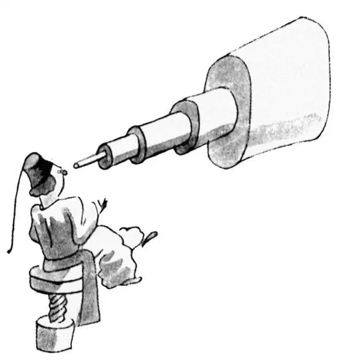
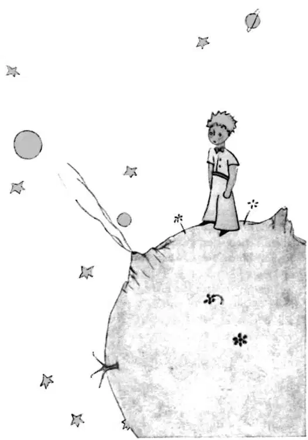
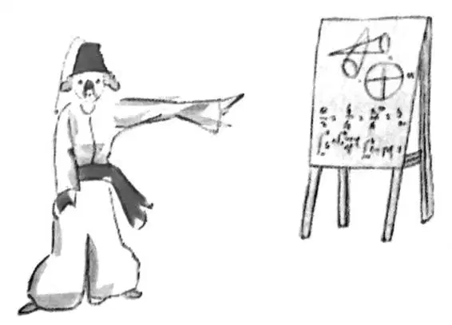
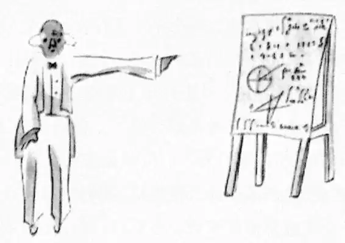

CHAPTER 4
第四章
—the narrator speculates as to which asteroid from which the little prince came
——叙述者推测小王子来自哪颗行星
I had thus learned a second fact of great importance: this was that the planet the little prince came from was scarcely any larger than a house!
因此，我知道了另一个非常重要的事实：小王子所在的那个星球比一座房子大不了多少！
But that did not really surprise me much. I knew very well that in addition to the great planets—such as the Earth, Jupiter, Mars, Venus—to which we have given names, there are also hundreds of others, some of which are so small that one has a hard time seeing them through the telescope. When an astronomer discovers one of these he does not give it a name, but only a number. He might call it, for example, "Asteroid 325.”
但那并没有让我感到多么惊讶。我非常清楚，除了大行星，像地球、木星、火星、金星这些我们已经命名的行星，还有其他成百上千的行星存在，其中有些特别小，甚至用望远镜也很难看到。当一个天文学家发现一颗小行星，他是不会给它取名的，只是给它一个编号而已。举个例子，他可能把它叫做“小行星325”。

I have serious reason to believe that the planet from which the little prince came is the asteroid known as B-612.
我有充分的理由认为小王子来自一个叫做B-612的小行星。
This asteroid has only once been seen through the telescope. That was by a Turkish astronomer, in 1909.
这颗小行星仅被天文学家用望远镜看见过一次。是被一位土耳其天文学家在1909年发现的。

On making his discovery, the astronomer had presented it to the International Astronomical Congress, in a great demonstration. But he was in Turkish costume, and so nobody would believe what he said.
为了证明他的发现，这位天文学者在国际天文大会上对此作了重要论证。但由于他身着土耳其服装，没有人愿意相信他的话。
Grown-ups are like that...
大人们总是那样……

Fortunately, however, for the reputation of Asteroid B-612, a Turkish dictator made a law that his subjects, under pain of death, should change to European costume. So in 1920 the astronomer gave his demonstration all over again, dressed with impressive style and elegance. And this time everybody accepted his report.
然而，幸运的是，为了B-612小行星的名誉，一位土耳其的独裁者制定了一条法律，命令他的臣民必须换上欧洲式样的服装，违者处死。于是1920年，那位天文学者穿着款式独特、高贵优雅的服装，从头到尾重新作了一次论证。这一次，每个人都接受了他的观点。

If I have told you these details about the asteroid, and made a note of its number for you, it is on account of the grown-ups and their ways. When you tell them that you have made a new friend, they never ask you any questions about essential matters. They never say to you, "What does his voice sound like? What games does he love best? Does he collect butterflies?" Instead, they demand: "How old is he? How many brothers has he? How much does he weigh? How much money does his father make?" Only from these figures do they think they have learned anything about him.
我能把这些关于小行星的细节讲出来，而且还能说出它的编号来，都是为了大人们以及他们处事方法的缘故。当你告诉他们，你交了位新朋友，他们从不问那些至关重要的问题。他们从来不问你：“他的声音听起来怎样啊？他最喜欢玩什么游戏啊？他收集蝴蝶标本吗？”相反，他们却问：“他多大了？他兄弟几个？他体重多少？他爸爸挣多少钱？”只有通过这些数字，他们才觉得对他有了些了解。
If you were to say to the grown-ups: "I saw a beautiful house made of rosy brick, with geraniums in the windows and doves on the roof," they would not be able to get any idea of that house at all. You would have to say to them: "I saw a house that cost $20,000.” Then they would exclaim: "Oh, what a pretty house that is!"
如果你和大人们说：“我看见一座漂亮房子，用玫瑰色的红砖砌成，窗子里是天竺葵，屋顶上有鸽子”，他们完全不能明白这房子长什么样。若是你不得不告诉他们：“我看见一座价值两万美元的房子。”他们则会大叫：“噢！那该是多么漂亮的房子啊！”
Just so, you might say to them: "The proof that the little prince existed is that he was charming, that he laughed, and that he was looking for a sheep. If anybody wants a sheep, that is a proof that he exists." And what good would it do to tell them that? They would shrug their shoulders, and treat you like a child. But if you said to them: "The planet he came from is Asteroid B-612," then they would be convinced, and leave you in peace from their questions.
就是这样，你可能会说给他们听：“小王子存在的证据就是，他很迷人，他笑了，他在找一只羊。若是有人想要一只羊，就说明他是真实的存在。”那么告诉他们这些有什么用呢？他们会耸耸肩，把你当个孩子。但如果你跟他们说：“他来自一个星球，叫做B-612小行星。”那么，他们就会信服于你，不再提任何问题，让你清清静静地呆着。
They are like that. One must not hold it against them. Children should always show great forbearance toward grown-up people.
他们就是那样。不需要因此来和他们作对。孩子应该总是给予大人们宽容。
But certainly, for us who understand life, figures are a matter of indifference. I should have liked to begin this story in the fashion of the fairy-tales. I should have like to say: "Once upon a time there was a little prince who lived on a planet that was scarcely any bigger than himself, and who had need of a sheep..."
不过当然，对于我们这样懂得生活的人，数字是没有感情可言的。我本该时髦一些，用一个童话开始我的故事。我本该这样开始：“在很久很久以前，有一个小王子，他住在一个星球上，这个星球比他自己大不了多少，他想要一只羊……”
To those who understand life, that would have given a much greater air of truth to my story.
对那些懂得生活的人而言，我的故事显得更加真实。
For I do not want any one to read my book carelessly. I have suffered too much grief in setting down these memories. Six years have already passed since my friend went away from me, with his sheep. If I try to describe him here, it is to make sure that I shall not forget him. To forget a friend is sad. Not every one has had a friend. And if I forget him, I may become like the grown-ups who are no longer interested in anything but figures...
因为我并不想读者看我的书时不认真。我在写下这些回忆时特别地悲伤。自从我的朋友带着他的羊离开我那天起，已经有六个年头了。我在这里描绘他，是为了确定我还没有把他忘记。忘记一个朋友真令人伤心。并非人人都有过朋友。如果我忘记了他，我可能会变得和那些只对数字感兴趣的大人一样。
It is for that purpose, again, that I have bought a box of paints and some pencils. It is hard to take up drawing again at my age, when I have never made any pictures except those of the boa constrictor from the outside and the boa constrictor from the inside, since I was six. I shall certainly try to make my portraits as true to life as possible. But I am not at all sure of success. One drawing goes along all right, and another has no resemblance to its subject. I make some errors, too, in the little prince's height: in one place he is too tall and in another too short. And I feel some doubts about the color of his costume. So I fumble along as best I can, now good, now bad, and I hope generally fair-to-middling.
正是这个缘故，我又去买了一盒颜料和一些铅笔。到了我这个年龄，很难再重新拿起画笔作画，除了六岁时画的一幅画出肚里大象的蟒蛇和一幅只画出外部轮廓的蟒蛇外，我就再没画过什么画了。当然，我还是要尽我所能把他的肖像画得逼真一些。不过，我一点也没有把握会成功。一幅画得还算好，而另一幅则和它的原型大相径庭。小王子的身高我也没画对，一处太高，另一处则太矮。他衣服的颜色我也不确定。所以我尽最大努力改进，一会好，一会又坏，我希望总体上过得去就行。
In certain more important details I shall make mistakes, also. But that is something that will not be my fault. My friend never explained anything to me. He thought, perhaps, that I was like himself. But I, alas, do not know how to see sheep throught he walls of boxes. Perhaps I am a little like the grown-ups. I have had to grow old.
某些比较重要的细节，我也会出错。可是那不怨我。我的朋友从没向我作任何解释。可能他认为我和他一样。可是天啊，我并不知道怎么能隔着匣子看到里面的羊。或许我和大人们还是有点像。我已经变老了。